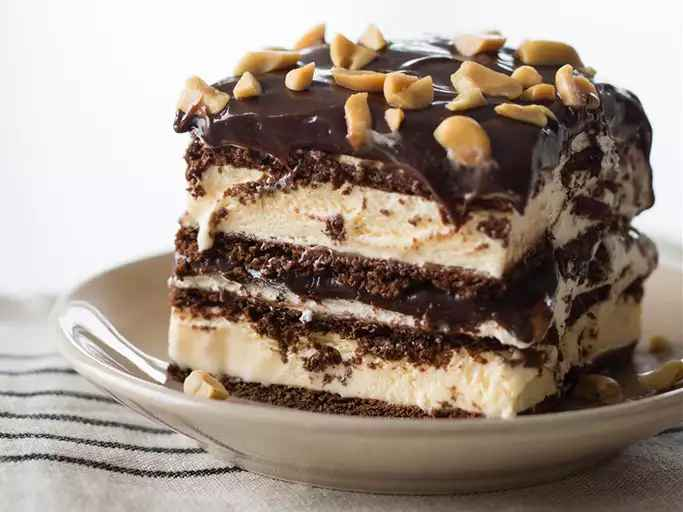

Homepage
Ice Cream Cake

Description
This is an incredibly easy rich and satisfying ice cream dessert made with
ice cream sandwiches and fudge sauce. This keeps in the freezer very well
and can be eaten straight from the freezer.
Ingredients
- 1 (16 ounce) can chocolate syrup
- ¾ cup peanut butter
- 19 ice cream sandwiches
- 1 (12 ounce) container frozen whipped topping, thawed
- 1 cup salted peanuts
Steps
-
Pour the chocolate syrup into a medium microwave-safe bowl and microwave
until hot, about 2 minutes on high, stopping every 30 seconds. Do not
allow to boil. Stir peanut butter into hot chocolate until smooth. Allow
to cool to room temperature.
-
Line the bottom of a 9x13-inch dish with a layer of ice cream
sandwiches. Spread half the whipped topping over the sandwiches. Spoon
half the chocolate mixture over that. Top with half the peanuts. Repeat
layers. Freeze until firm, at least 1 hour. Cut into squares to serve.